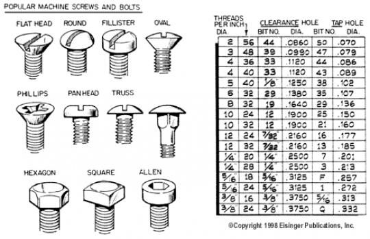

Machine Screws
2017-01-16

A good table of sizes is here
Standard
STANDARD thread size refers to a thread measurement system commonly used in the United States called the ‘Unified Thread Standard’. This system uses two numbers to identify thread size, for example: 1/4-20 or 2-56.
[screw diameter]-[threads per inch]The first number references to the major diameter of the screw (major diameter is the outside diameter of the screw measuring on the outside of the threads, minor diameter is the smaller shank diameter, measuring between the threads). Larger screw sizes typically use a fraction in inches to identify major diameter, so a 1/4-20 screw has a major diameter of 1/4". Smaller screw sizes will use a 'gauge' number such as 0, 1, 2, 3, 4, 6, 8, 10, etc., to identify major diameter.
The following formulas can be used to translate the gauge number into decimal inches or metric (or use cross reference chart below).
Where n equals gauge number:
n * 0.013 + 0.06= major diameter in decimal inches
n * 0.3302 + 1.524= major diameter in millimeters
The second number (80, 72, 64, 56, 32, 20, etc.) specifies the number of threads over a distance of 1" (25.4mm).
So using the above information, a standard thread size of 2-56 has a major diameter of:
0.086" (2 * 0.013 + 0.060)
2.184mm (2 * 0.3302 + 1.524)
with 56 threads per 1" (25.4mm).
Following is a cross reference showing: gauge / decimal / metric:
| Guage | Decimal | Metric |
|---|---|---|
| 0 | 0.060" | 1.524mm |
| 1 | 0.073" | 1.854mm |
| 2 | 0.086" | 2.180mm |
| 3 | 0.099" | 2.515mm |
| 4 | 0.112" | 2.845mm |
| 5 | 0.125" | 3.175mm |
| 6 | 0.138" | 3.505mm |
| 8 | 0.164" | 4.166mm |
Metric
METRIC thread sizes also use two numbers to identify thread size, for example: M3.5 x 0.60. The first number describes the major diameter in millimeters. The second number designates the pitch of the thread, which is basically the distance from any one point on a thread to a corresponding point on the next thread. Following is a cross reference chart showing how pitch relates to threads per inch (25.4mm):
| Threads per inch (TPI) | Pitch | TPI | Pitch |
|---|---|---|---|
| 0.30mm | 84 3/4 | 0.60mm | 42 1/4 |
| 0.35mm | 72 1/2 | 0.70mm | 36 1/4 |
| 0.40mm | 63 1/2 | 0.75mm | 33 3/4 |
| 0.45mm | 56 1/2 | 0.80mm | 31 3/4 |
| 0.50mm | 50 3/4 |